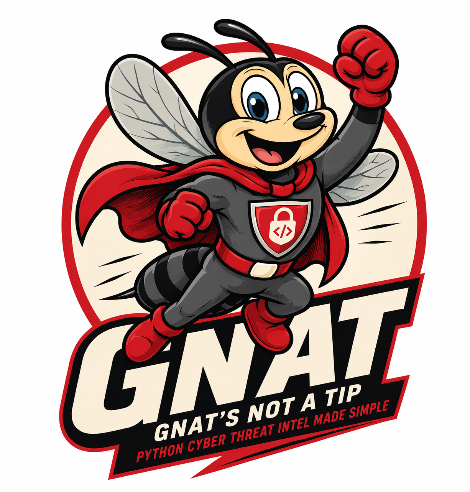

One library. Every platform. Total control.
Cyber Threat Intel Made Simple
Uniform CRUD + bidirectional STIX 2.1 translation. ThreatQ, CrowdStrike, Splunk, Sentinel, MISP, VirusTotal, Mandiant, and 152 more.
Property-bag ORM for Indicators, ThreatActors, Malware, Vulnerabilities, Campaigns, AttackPatterns, Relationships, and Observables.
Translate STIX patterns to Sigma, YARA, Suricata, and Snort rules. Hunt packages, ATT&CK coverage matrix, deployment drift detection.
Diamond Model, kill-chain progression, competing hypotheses with Admiralty Scale scoring, actor profiles, cluster-to-campaign promotion.
Hy/Lisp declarative rules for automated hypothesis evaluation. 26 helpers, audit trail, AI-60 confidence ceiling, priority first-match.
Kafka consumer for honeypot, netflow, IDS, and DNS sensor data. Redis dedup, automatic campaign linking, severity gating.
Unified LLMClient (Claude, OpenAI, Grok, Gemini). ResearchAgent, ParsingAgent, quality and security sub-agents.
Five-step cross-platform evidence graph: seed → expand → normalise → correlate → materialise. Infrastructure role classification.
PDF, DOCX, HTML, Markdown. TAXII 2.1 server, webhook fan-out with HMAC signing, STIX bundle export.